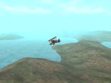

Hilfe

Parameter
| Teilung | Anzahl der Segmente an jeder Terrainkante |
| Parent | Identität des Objekts zu dem es hinzugefügt werden soll. |
Rückgabewert
Es wird die Identität des Terrains zurückgeliefert.
Beschreibung
Der Befehl CreateTerrain erstellt ein Terrain und liefert die Identität des Terrains zurück.
Das Terrain wird an der Koordinate 0, 0, 0 erstellt. Die Breite und Höhe entsprechen der Teilung.
Ein Terrain ist ein spezielles Objekt, welches level-of-detail (LOD) benutzt. Dadurch sind theoretisch Terrains mit Millionen von Polygonen möglich. Dabei werden nahe Terrainstellen sehr detailliert gezeichnet, weite Terrainstellen haben dagegen geringe Details.
Die ständige "umordnung" der Polygone ist jedoch deutlich erkennbar - dies ist ein bekannter Nebeneffekt, der dabei auftritt. Dieser "pop-up"-Effekt kann jedoch etwas reduziert werden (mit dem Befehl TerrainDetail ).
).
Die Größe des Terrains muss eingegeben werden. Dies kann immer nur ein Exponent von 2 sein (z.B. 2,4,8,16,32,64,128,256...).
Wurde der Parameter "Parent" angegeben, dann wird dieses Terrain zu einem Objekt hinzugefügt. Falls nun ein Parent-Objekt bewegt wird, dann werden alle hinzugefügten Objekte automatisch verschoben. Ein Child-Objekt verschiebt dagegen kein Parent-Objekt mit.
Das Terrain wird normalerweise an der Position 0, 0, 0 erstellt. Wurde Parent angegeben, dann wird die an der Position des Parent - Objekts erstellt.

Beispiel
Standardbeispiel:
Graphics3D 640, 480
SetBuffer BackBuffer()
camera = CreateCamera()
PositionEntity camera, 0, 1, 0
light = CreateLight()
RotateEntity light, 90, 0, 0
terrain = CreateTerrain(128)
grass_tex = LoadTexture("media/mossyground.bmp")
EntityTexture terrain,grass_tex
While Not KeyHit(1)
If KeyDown(205) = 1 Then TurnEntity camera, 0, -1, 0
If KeyDown(203) = 1 Then TurnEntity camera, 0, 1, 0
If KeyDown(208) = 1 Then MoveEntity camera, 0, 0, -0.05
If KeyDown(200) = 1 Then MoveEntity camera, 0, 0, 0.05
RenderWorld
Text 0, 0, "Benutze Cursortasten..."
Flip
Wend
End